Until now, I have talked about how to design a microservice system that has controls in place to prevent malicious users from gaining unauthorized access to resources. This chapter takes a slightly different approach. Consider what would happen if, despite your best efforts at segmenting, controlling access, and applying network security measures, an attacker has somehow managed to exploit a vulnerability in your organization and gain unauthorized access.
Every company has to deal with security breaches at some point. Incidents do not necessarily indicate how secure a company’s security posture is or how they conduct their business. A humorous quotation made by John Chambers at the World Economic Forum that I generally like to use whenever I talk about information security is, “There are two types of companies: those who have been hacked, and those who don’t yet know they have been hacked.” It is their level of preparedness for an incident that distinguishes a good company from a bad one.
In this chapter, I will be going through various types of detective controls that administrators have on AWS resources. It is the goal of detective controls to make security incidents more visible and reduce the time required for their detection or response. AWS provides every user with the ability to monitor all the activities that happen on the cloud. This includes the ability to log every action, specify metrics, and alert for any suspicious behavior. I will then introduce you to tools that can help you with certain detective controls that help in identifying the impact and scope of any suspicious activity. I will be following the incident response framework created by the National Institute of Standards and Technology (NIST) in order to respond to security incidents.
While my focus will be on the security aspect of monitoring and protection against known intruder patterns, some techniques mentioned in this chapter will also help in adding more monitoring across the board for better reliability and resilience.
The ISO/IEC 20000 standards as part of their “Security Best Practices” define an incident as “a single or a series of unwanted or unexpected information security events that have a significant probability of compromising business operations and threatening information security.” IT service management professionals are typically required to follow a response strategy in the event of an incident as part of most operational compliance standards. In this chapter, I will discuss such incidents and how they are handled when they occur in the security domain.
An incident may be caused by a variety of reasons, including but not limited to hardware failures, power outages, malicious intent, theft, terrorism, and more. Recall from Chapter 1 that a security incident usually occurs due to an unauthorized actor known as a malicious actor. It is imperative that a time-sensitive process is implemented following an act of malicious intent so that the organization can avoid serious financial or reputational losses.
Although every security incident is likely to be different and there may not be a one-size-fits-all approach, certain common threads can be found in many security incidents. In the event of a security incident, you can use these common threads to form a framework of procedures and policies in order to guide critical decisions. In this section, I will discuss such a framework that has been created by the NIST, a part of the US Department of Commerce, based on extensive research and analysis of cybersecurity incidents that have occurred across many organizations.
The NIST incident response framework is published as part of the Computer Security Incident Handling Guide, available for reading on the NIST website. This chapter will explore how various AWS services can be leveraged to apply NIST’s incident response plan.
NIST Incident Response Plan—IR-4 as prescribed by the NIST can be roughly summarized in these six steps:
Generally, security responses may involve an iterative process of resolution. Even after following all of these steps, there is a possibility that the malicious actor may still be able to infiltrate the system. This would mean repeating all of the steps until the security of the system is strong enough to prevent another attack from this malicious actor.
The design and preparation step is the first step of the NIST incident response plan and probably the most crucial part of the incident response framework. This phase dictates that every organization should be proactive in setting up controls to pre-emptively block security incidents from becoming catastrophic events.
A well-architected system is probably the best defense against a potential attack. Even if such a system is compromised, a well-designed system has controls in place that ensure that access to one compromised resource of the system does not compromise the entire system, but instead contain the unauthorized access to the very specific region. To use security-related terminology, the blast radius of a security incident is isolated to a specific module. Systems implement architectural techniques such as the principle of least privilege (PoLP), need to know, microsegmentation, zero trust, request-response strategies, and strong multifactor authentication (MFA) for all of its users.
As an example, consider a microservice system that has implemented good segmentation at the network, application, and transport layers. Figure 9-1 shows a typical microservice application with multiple bounded contexts. There are four bounded contexts in this example: Marketing, Analytics, Finance, and User profile (which displays the personal information of each customer). Now assume that one of the microservices inside the User profile service context is compromised by an attacker.
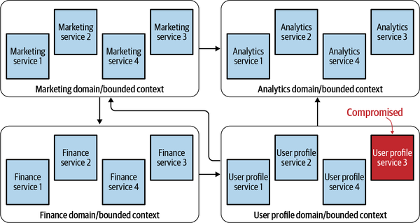
As soon as such an attack is detected, security professionals can jump on the incident by taking remedial measures to isolate the affected bounded context (User profile services) and all the services within that context.
While the services inside the affected bounded context will be isolated, and hence taken down for a short duration of time, the rest of the application can possibly still continue to function. How much of your business will be affected will of course depend on the criticality of the service in question.
Figure 9-2 shows how security professionals can quickly isolate the infected part of the network.
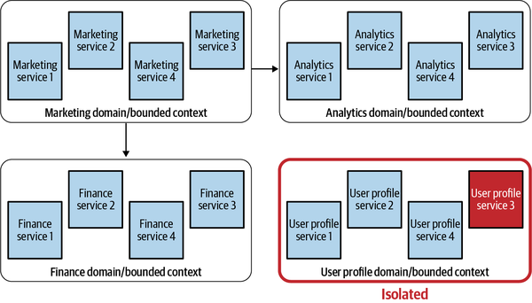
This ability to isolate based on functionality is possible only because of the ability of microservices to be grouped into bounded contexts based on the business domain. With proper alignment of business domains with microservices, the security professionals can immediately communicate the effects of the outage to the stakeholders and possibly the end users of the application.
Since microservice contexts are aligned with business domains, the effect of the degradation of one particular service may generally be contained within its business domain. Figure 9-3 shows how service status dashboards can show an isolated incident on the status page.
Throughout this book, I have covered all of the different ways in which a well-architected system can block unauthorized access at various levels of the network and application layers. Hence, I will not go into the details of these in this chapter. However, it is worth knowing that the probability of attacks can be significantly reduced through the adoption of such design philosophies. Although incident response teams are generally not responsible for securing resources, they can be advocates of sound security practices.
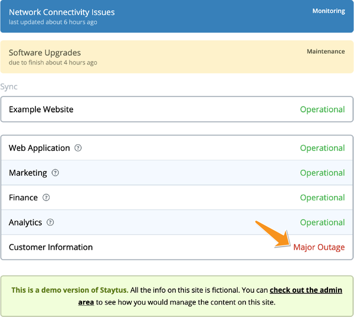
One of the common places to find unauthorized activity is inside activity logs. Once a malicious user gains unauthorized access to your cloud infrastructure, they may attempt to use your resources to perform other unauthorized activities. This may include spinning up new resources or possibly changing identity and access management (IAM) permissions on other users and allowing wider access to other cloud resources.
AWS CloudTrail is a service that allows you to monitor all API requests and activities of all users. Enabling CloudTrail on all of your accounts will enable you to monitor for any suspicious activities when it comes to resources. You can also find out what resources were used, when events occurred, and other details to track and assess your account’s activity.
CloudTrail events are the main data object that CloudTrail wishes to log. These events are the record of an activity in an AWS account. These events can be created as a result of any command issued by the user, either through the AWS Console, the AWS Command Line Interface (CLI), or the AWS SDK.
On CloudTrail, all events can be divided roughly into three distinct types:
One way of accessing the CloudTrail events is by storing them in log files. These files can contain multiple events in a JavaScript Object Notation (JSON) format logged together.
On CloudTrail, this set of events that constitutes the state of your application is called a trail. You can enable this trail to log per region, per account, or per AWS Organization. An AWS Organization-wide trail is called an organization trail.
In order to maintain durability and high availability, all CloudTrail logfiles can be logged into an AWS S3 bucket that you specify. After a trail is created, CloudTrail automatically begins logging API calls to your S3 bucket. Stopping logging on the trail is as easy as turning it off or deleting it.
Figure 9-4 shows how you can create a CloudTrail trail using the AWS Management Console, then going to the CloudTrail page and enabling the logging of management events within the trail.
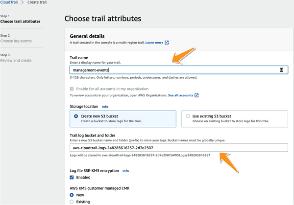
While creating the trail, you also get the choice of choosing which types of events you want to log in the bucket. Figure 9-5 illustrates the process of choosing the events.
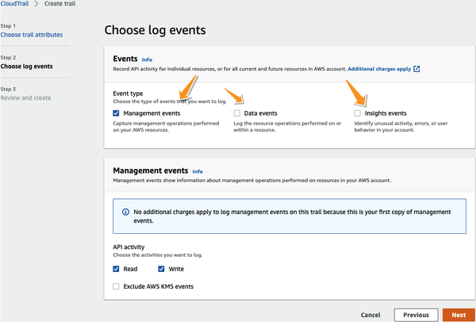
A virtual private cloud (VPC) flow log allows you to capture information about traffic going to and from a network interface in your VPC. It can be created for either a VPC, a subnet, or a network interface.
A compromised cloud resource may perform unusual network activity. VPC flow logs can be used when analyzing such activity that may have taken place at the network layer. In a microsegmented network (a network that is partitioned based on business domains), aggregated flow logs may indicate patterns of communication. You can use these patterns to establish a baseline that describes the network communication that exists within your application. At the time of a security incident, you may observe that there is a deviation in terms of structure or the volume from the baseline patterns that you are used to. Thus, by using aggregated statistics around flow logs, you may be able to identify security-related breaches that other metrics or indicators in your microsegmented application may not be able to point to.
On the other hand, in my experience it is very possible for well-meaning security professionals to cause security incidents. Sometimes a security professional may implement a blunt security control at the network level to prevent a particular communication pattern that they feel is unusual. However, unknown to them, such an act may in fact interfere in day-to-day operations. VPC logs will, in such a situation, be useful in identifying the offending control and sharpening it to incorporate the nuance associated with the underlying communication, thus helping to mitigate the issue as soon as it is identified.
Flow logs are logged outside of the network’s path, so they don’t affect network throughput or latency.
AWS also provides you with a fully managed log aggregation service in the form of CloudWatch logs, as part of AWS CloudWatch. CloudWatch logs provide you with a safe place to aggregate, store, and retrieve application logs. Unlike CloudTrail, which logs API activity on the infrastructure as a whole, AWS CloudWatch provides cloud applications with a centralized log display service that can collect and display application-level logs of your microservices that run on AWS Elastic Cloud Compute (EC2), AWS Lambda, or any other AWS resource.
It is important to realize the difference between AWS CloudWatch and AWS CloudTrail. While CloudTrail logs API calls and calls that change the infrastructure, AWS CloudWatch is where logs related to applications running on this infrastructure end up. In my experience, it is very common for clients to get confused between the two.
Apart from logs, a different way of monitoring activity is through the use of metrics. These metrics are preaggregated data points that indicate the state of your infrastructure. These may include CPU utilization for compute services, storage utilization for storage services, or many other such statistics. In contrast to monoliths, microservices include multiple servers running in multiple locations, which generate a variety of metrics associated with each microservice. As a result, unlike monoliths where monitoring the health of one application can identify the health of the entire system, microservices require aggregation of multiple data points across the system.
A common term you may hear in most organizations is a single pane of glass. Many marketplace observability solutions offer the promise of being able to observe all the metrics that your organization needs and display them to your stakeholders in one place. Over the years, I have become a huge cynic of such an approach to monitoring. A one-size-fits-all approach to monitoring just does not seem to work well, in my opinion. In an environment such as a microservice environment where flexibility and autonomy are valued, different tools are better at capturing different aspects of a runtime microservice. Hence, in my opinion, it is best to use the right tool for collecting the right sets of metrics based on the task that the microservice performs. For example, one tool may be better at capturing metrics for Java-based microservices while another tool might be better for Python. Just because you want stakeholders to be able to view the metrics in the same place does not mean the microservice developers should have to compromise on the type of tools they use to capture the data.
A strategy known as composable monitoring is utilized for aggregating such metrics across various microservices and storing them in a single place. Composable monitoring prescribes the use of multiple specialized tools, which are then coupled loosely together, forming a monitoring platform. For those interested in specialized knowledge on monitoring, Practical Monitoring by Mike Julian (O’Reilly) goes into the details of how you can set up a composable monitoring strategy on your microservice organization.
Knowing the importance of composable monitoring, AWS decided to provide us with a fully managed service in the form of AWS CloudWatch in order to aggregate, compose, and visualize all your application metrics in one place.
Since the monitoring in a cloud microservice environment involves composing and aggregating metrics from various sources into one location, managing the monitoring solution may get out of hand if you have a large number of metrics. Thus, to improve the manageability of metrics, it is important to introduce some structure to the metrics you may capture.
A namespace encapsulates a group of metrics. Namespaces provide administrators with the ability to separate statistics out in a clean and manageable way so that statistics from different namespaces will not be accidentally aggregated into a single statistic.
Every data point must be published to CloudWatch with a namespace. There is no default namespace.
There are four key elements to monitoring data in CloudWatch:
It’s easiest to explain how CloudWatch monitors your infrastructure with an example. Let us assume you run a number of EC2 instances across multiple regions. These instances can also be tagged to run different types of services. In such a situation, you want to track the CPU utilization and the memory utilization of these instances:
A third way of monitoring an application is through the use of a technique called synthetic monitoring. In synthetic monitoring, behavioral scripts are created to mimic an action or path a customer or an end user might take on a site or a system. It is often used to monitor paths that are frequently used by users and critical business processes. Amazon CloudWatch Synthetics lets you monitor your endpoints and APIs using configurable scripts that are triggered based on a predefined schedule. Canaries are scripts written in Node.js or Python. AWS creates AWS Lambda functions within your account to run and execute these scripts.
Canaries can be created in the Synthetics tab on the AWS CloudWatch page within the AWS console, as seen in Figure 9-6.
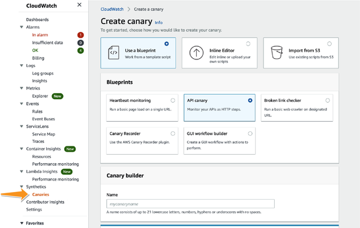
Now that I have introduced you to the monitoring tools, let me discuss a few other services that AWS offers that can help you secure your application. It is important to remember that there is no single best solution for monitoring, and you may have to utilize all the services that AWS has to offer in order to minimize the probability of an incident.
You can use AWS Systems Manager (AWS SSM, due to its legacy name—Simple Systems Manager) to view and control your infrastructure on AWS. Using the SSM console, you can evaluate operational information from multiple AWS services and perform automated tasks across your AWS resources. To use AWS SSM as an incident response tool, cloud administrators should install AWS SSM Agent on each instance in their cloud infrastructure. The AWS SSM Agent makes it possible for SSM to update, manage, and configure EC2 instances, on-premises servers, and virtual machines (VMs). The SSM Agent is preinstalled on EC2 instances that host images such as Amazon Linux, Amazon Linux 2, Ubuntu Server 16.04, and others.
Using machine learning and pattern-matching technology, Amazon Macie is a fully managed data security service that helps security professionals in discovering, monitoring, and protecting your sensitive data stored in AWS. Macie’s automated discovery service helps identify sensitive data, such as personally identifiable information and financial data, in Amazon S3. It will monitor and evaluate each AWS S3 bucket that contains sensitive data in real time for security and access control.
With the explosion in popularity of data collection, it is common for organizations to have a lot of data stored across various data storage mediums. Taking this to a new level is the use of microservices, which prefer not to have a shared storage layer, thus resulting in a lot of storage infrastructure.
However, not all data is created equal. All types of data need to be protected against malicious attacks, but the most sensitive data, such as personal identifying information of customers, medical records, financial records, and the like, require special attention. From a security perspective, it is important for security engineers to identify and categorize all systems that could potentially be storing sensitive data; this way, such data can be hardened against security threats.
Domain-driven design (DDD) places responsibilities for data storage on each bounded context. Therefore, in practice there may be hundreds of such contexts with thousands of datastores. A certain team might be storing data that is sensitive in an unprotected datastore without the security team knowing about it. Amazon Macie allows administrators to identify the resources that should be protected due to the fact that they contain sensitive data.
You will develop an architecture that is fairly secure and heavily monitored if you have followed some or all of the recommendations in Step 1. However, even the most secure environments are vulnerable to breaches. Hence, you may want to employ systems that can filter out the signals of a security breach from the rest of the noise. In this section, I will outline some of the AWS services (such as AWS EventBridge) that can help you in identifying such indicators. Security professionals can detect breaches early with the help of these services before they cause any significant damage.
In this phase, the job is not to find the root cause of the breach but rather to clearly identify:
What kind of an attack is taking place?
Which resources or services have been compromised?
How are the resources compromised? Has someone gained elevated access to your infrastructure? Or is someone using your resources to launch attacks on an external system?
What is the bare minimum step that security professionals can take so that the rest of the application can continue to function while the incident can be investigated?
In most cases, a threat may not have any detectable or identifiable precursors. However, in the rare event when a precursor (an indicator of a legitimate, forthcoming security breach) is detected, there is a possibility to prevent the incident by adjusting your security posture to save a target from attack. At a minimum, the organization can monitor activity more closely that involves the target. Precursors to an incident may include but are not limited to:
Common vulnerability scanners alerting on the presence of common vulnerabilities inside the code
VPC flow logs showing the use of port scanners
A sudden increase in denied authentication requests
A sudden change in the traffic patterns of incoming traffic for a web application
For certain sensitive applications, the presence of such a precursor may be enough to trigger the entire incident response plan, without waiting for the actual incident to occur. Unfortunately, not all indicators or precursors are 100% accurate, reducing the likelihood of detection and analysis. As an example, user-provided indications such as a complaint of a server being unavailable may often be false. As a consequence, a great number of security precursors act as very noisy indicators of security events.
In spite of the fact that alerting is prone to false positives, complacency may be the biggest threat to well-designed secure systems. Modern information systems remain vulnerable to cyberattacks, and ignoring important alerts as false positives could have disastrous results. Information systems have detective controls for a reason, and every datapoint that triggers an alarm should be thoroughly investigated. It is possible that the outcome of this evaluation will be that the alert needs to be tweaked to incorporate the nuance involved in detecting deviations from the norm.
AWS provides users with the ability to interact with almost all the events that take place on their accounts. These events are streamed into a centralized fully managed service called AWS EventBridge. In a secure system, the baseline behavior of a cloud system that is normal can be identified proactively. When this event stream deviates significantly from baseline behavior, security architects can place alerts.
In this section, I will talk about how the AWS EventBridge can be used to better identify security breaches. I will start by introducing some of the components of AWS EventBridge.
Once you have the event bus configured to centrally stream all of the events in the account, you want to be able to distinguish between malicious and normal events. AWS EventBridge allows you to specify rules that will be evaluated against each event that is streamed to the event bus. If a rule matches the event data (and its associated metadata), you can specify any automatic action to take. Actions may include alerting the right people to a security incident or perhaps addressing the issue itself automatically. Specifically, a rule can invoke any other AWS service to take further action, such as the AWS Simple Notification Service (SNS) or AWS Lambda.
Figure 9-7 shows how you can specify a rule using an event pattern that is evaluated against the events that are observed on AWS EventBridge. AWS provides extreme flexibility in specifying a pattern for events. Most AWS services send events to AWS EventBridge. Events contain metadata along with the event that includes data such as the name of the service, type of event, time of occurrence, AWS region, and more. Patterns can be specified to include or filter based on any of these values.
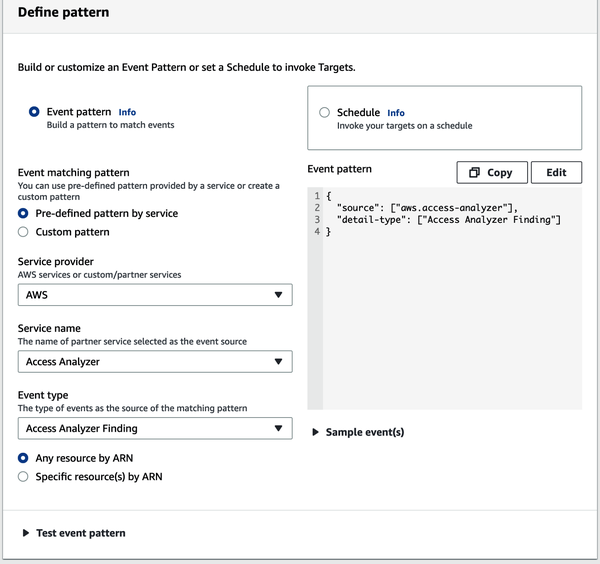
Upon matching a rule to an event on the event bus, you can specify a target AWS service that AWS can automatically call for you. The target can be another AWS service you would like to invoke automatically or perhaps an HTTP API endpoint. AWS is extremely flexible in allowing you to configure event targets. The targets are called asynchronously outside of your application’s critical path; therefore, you don’t need to worry about performance implications. Figure 9-8 shows how you can define a target in the AWS Management Console.
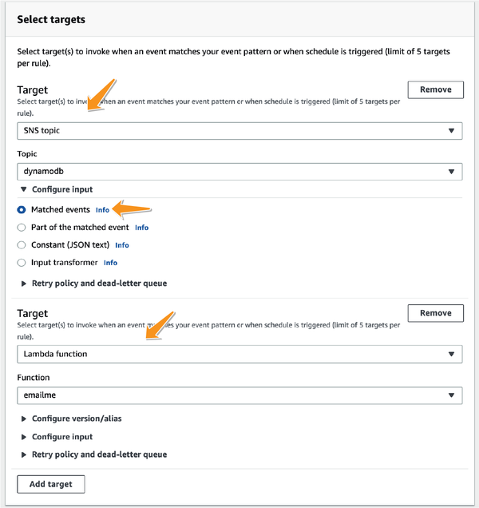
The input to the target services can be tweaked to match the expectations of the target service. AWS EventBridge also allows integrations with other third-party alerting and monitoring services such as Zendesk, Splunk, Datadog, and others. More information can be found from AWS.
After identifying (and perhaps verifying) that there has been a security incident within your application, you can proceed to the next step in the NIST framework to contain the incident. It is important to contain an incident to ensure the amount of damage caused is minimized and limited to only a very small subset of your services. A well-architected secure system is your best defense during an attack, and the modularity that microservices affords you will enable you to contain the incident.
As an example, consider a Kubernetes-based microservice; your monitoring alerted you on a certain Service C running on the Kubernetes Node 3 that seems to have been compromised, as shown in Figure 9-9.
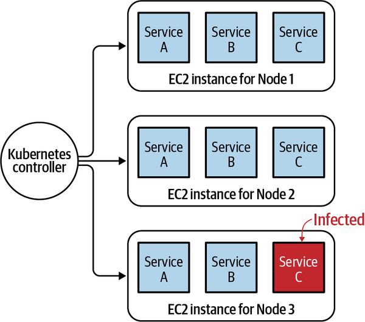
If you have identified a security breach and narrowed down your analysis to a microservice, your security incident will fit into one of these two categories:
Our infrastructure that is running the microservice may have been compromised. This may include the underlying EC2 instances that run your Kubernetes nodes or possibly any other service that your microservice connects to or a malware application being installed on self-hosted instances.
There may be an application layer bug or a loophole that allows an unauthorized user to gain elevated access.
Your response to such an event may be different based on which of the following two possibilities has resulted in a security incident.
The problem of compromised infrastructure happens when the microservices are deployed in environments where the customer bears the responsibility of securing the infrastructure as part of the AWS Shared Responsibility Model (SRM).
In our example, it is possible for malware to be deployed on an EC2 instance that hosts Kubernetes nodes in a Kubernetes setup. An attacker may also gain access to your cloud infrastructure using a known exploit on a self-hosted service.
If the EC2 instance on which a microservice runs is compromised, taking down the service may not contain the threat effectively. The vulnerability will continue to exist in your infrastructure as long as the EC2 instance is running. In such situations, the main objective is to isolate the underlying cloud resource and not just the microservice that you identified to be the problem.
In cases where AWS assumes the responsibility of securing the infrastructure, you can expect AWS to be proactive in fixing incidents without any indication of a security breach to the end user. Hence, you do not have to be worried about the infrastructure that runs AWS Lambda, Amazon Elastic Kubernetes Service (EKS), or AWS Elastic Container Service (ECS) containers if they are running in the Fargate Mode. In such situations, the only aspect that you should be concerned about would be a compromised code at the application layer.
The AWS incident response framework recommends starting from the network layer by blocking and completely isolating any affected hardware in order to perform further analysis on it. In its guide, AWS prescribes a step-by-step process for performing this isolation task in a responsible way so that you and your team can then perform analysis on the affected pieces of infrastructure:
Take a snapshot. Capture the metadata from any of your affected cloud infrastructure. This means somehow registering the state of the infrastructure at the time of the attack to ensure that any forensic activity will not result in losing precious information about the infrastructure. If your application runs on EC2 instances, this will mean taking a snapshot of the AWS Elastic Block Store (EBS) volume that backs this instance. If you have AWS Relational Database Service (RDS) instances that were compromised, it will mean taking a snapshot of the database.
Freeze the instance. Once the initial state of the application has been registered in the snapshot, you may want to disable any automated processes that may interfere with the state of the infrastructure. So if you have any autotermination enabled on instances or any other policy that alters the state of the instance, it might be best to make sure the forensic analysis is not affected by such rules.
Isolate. After Steps 1 and 2, you are ready to isolate the instance. Recall from Chapter 5 that network access control lists (NACLs) are best suited for specifying policies that deny access to network resources at a subnet layer. They are applied at a subnet level, so you may want to move your affected resource into its own subnet and isolate and contain any access to this resource using NACLs (and possibly security groups as a supplemental layer of protection). The NACLs should make sure that any access apart from forensic analysis will be explicitly denied in the access policy of this subnet. This isolation will ensure that only the security engineers will have access to or from the infected resource, and the rest of your application can continue to function as expected.
Mitigate. Once isolated, you should also remove the resource from any autoscaling or load-balancing groups that it may be a part of. You should also deregister this instance from any load-balancing groups that it may be a part of.
Maintain records. Finally, for recordkeeping it is important to set a predetermined AWS tag on such resources to indicate that these resources are kept isolated for the purposes of digital forensics and may be destroyed after the analysis is complete.
Figure 9-10 shows the result of a successful containment of an incident when the underlying infrastructure was compromised.
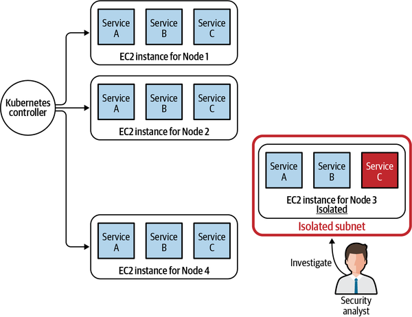
In the event that there is an application layer bug or a loophole that allowed an unauthorized user to gain elevated access, isolating the underlying compute instances may be a waste of time. This is mainly because restarting the same application on another piece of infrastructure will result in resurfacing the breach on another resource.
When only the infrastructure is compromised, your best business continuity plan may involve spinning up all services on new cloud infrastructure. However, the original breach will simply be replicated if a new service is spun up on new resources with compromised application logic. As a consequence, businesses must be prepared to encounter downtime of critical services while the root cause is resolved. A microsegmented system is significantly easier to contain attacks on since microsegmentation helps you isolate segments within your application at the infrastructure level.
In addition, because it is the application logic that was affected, even services that are hosted on a fully managed AWS environment such as AWS Lambda or Amazon ECS/EKS Fargate will likely continue to face the same problems.
In such a situation, the remaining microservices would typically continue to run on the existing infrastructure. The affected service is moved into a separate, isolated environment where security analysts can carefully assess its security vulnerabilities in a controlled environment. Figure 9-11 highlights this process.
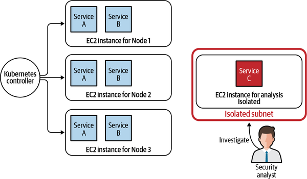
Identity and Access Management (IAM) is another choice that security professionals have for containing applications that might have been compromised. A great place to start is to reduce access privileges for roles that your application is using to access other AWS resources. This will help in ensuring that the compromised microservice does not bring down the entire architecture.
After an incident has been contained successfully, security professionals should turn their attention to determining the cause of the incident. In order to do that, security engineers need to examine the state of the application at the time of the incident and search for clues and evidence on what caused the security breach. The evidence gathered during forensic analysis may be circumstantial in many cases instead of definitive; it needs analysts experienced in this field to evaluate its legitimacy.
Some incidents are easy to detect, such as a defaced web page or a demand for a ransom. However, in many cases, incidents may be very subtle and may require precision monitoring for identifying. It is not uncommon for incidents to go undetected anywhere from hours to months before some rule or event in Step 2 is able to detect it. At the forensic analysis stage, it is considered standard practice to analyze logs from before the earliest observation of the incident, as well as to analyze logs from before the actual report of the incident.
Since this activity may be long and time-consuming, it is critical to ensure that the incident has indeed been contained. At times, security professionals will need to go back to Step 3 because containment procedures performed in Step 3 the first time may not have been sufficient.
In the process of forensic analysis, security professionals may require parsing and sifting through log files to find evidence related to security incidents. I have already highlighted various ways in which you can enable logging for different types of AWS activities (CloudTrail logs, CloudWatch logs, VPC flow logs). AWS Athena is a multipurpose tool that security professionals may want to use in going through these files if they are stored on AWS S3.
AWS Athena is an interactive query service that makes it easy to analyze data directly in AWS S3 using standard SQL. In AWS Athena, you can specify the format of your logs, and AWS Athena allows security professionals to perform complex analysis directly on log files as if it were part of a queryable database. Sample scripts from AWS for Athena setup for all logging datasets are available from Amazon.
For organizations that are confident of their containment measures from Step 3, probably the best way of analyzing the incident may be to keep the affected resource running and analyze the live environment under which the incident took place. This analysis is called live-box forensic analysis since it is performed on the same resources that were affected.
This means, if an EC2 instance was affected, security professionals can log into the box and take memory dumps to analyze for patterns of malicious code. Live-box forensics may be the most efficient form of analysis since it involves the preservation of most of the original evidence. It also allows security professionals to run common exploit scanners on the live environment where the breach occurred with a lower risk of having to deal with dead evidence. Live-box technique preserves and harvests vital evidence from an instance’s memory, cache, and other runtime processes.
Although live-box forensics is great for performing analysis, security analysts may not always feel comfortable allowing an infected machine to run regardless of how isolated it may be. Furthermore, in Step 2 security professionals may have taken steps while isolating the machine that may have already tampered with the existing evidence. As a result, an alternative method of digital forensics may also be used by security analysts to perform their root cause analysis.
This method uses any snapshots that were created during Step 3, just before containment, to re-create the machine and an environment that may be identical to what it was, when the attack actually took place. This method of analyzing based on a re-created environment (out of snapshots and events) is called dead-box forensic analysis.
Dead-box forensics allows for an extended and detailed investigation process to be performed in parallel on the same resource. It also allows for security professionals to revert back to the original state of the instance after performing each analysis since it relies on a re-created instance.
Multiple analysts can re-create the environment under which a resource was compromised by re-creating the resource from the snapshot image, allowing for parallel analysis. Having said that, the loss of the vital in-memory information may result in the dead-box forensics becoming useless against attacks that rely only on in-memory attack vectors.
In this section, I will introduce you to some tools that security professionals use to perform forensic analysis on AWS.
I have already talked about AWS SSM Run Command in Chapter 8 and how it can help in allowing ordinary users to execute predefined scripts (called SSM documents) that require elevated access privileges. AWS Run Command can be used in the process of forensic analysis.
Assuming you have isolated your compromised EC2 instance by following the steps outlined in Step 2, you will then want to perform analysis on the instance. Using Run Command, it is possible for you to securely execute commands on EC2 instances inside a closed perimeter without enabling any network connections to the outside world. Any live-box or dead-box forensics that needs to be performed can be performed remotely by issuing commands through the AWS console while SSM Agent assumes the responsibility of connecting to the machine inside this closed perimeter and executing the commands on your behalf.
With EventBridge, you can create an archive of events so that later you can reprocess them by starting a replay of events that allows your security professionals to go back to a particular state of the application in the past. Event replays combined with a microservice event store can help in further replicating the scenario under which particular security events may have taken place, thus allowing for easier and more efficient debugging and forensic analysis.
Apart from all of the analysis that you can perform on your infrastructure, AWS also partners with other third-party solution providers that can assist you in the process of digital forensics. These tools involve the use of machine learning for log analysis and better common vulnerability detection and analysis. A list of marketplace solutions can be found on Amazon.
Generally, in most large organizations the eradication step happens in parallel to Step 3 where analysts are working on the digital forensics. The aim of this phase is to remove the root cause of the security breach and ensure that any loophole that was created is no longer available for the attacker. It is also part of this step to include additional security measures to ensure better security compliance for future breaches that may be similar to the incident but not the same as the one in question.
A good rule of thumb is to assume that anything an attacker may have come in contact with could have been compromised. Some common activities that cloud administrators can perform as part of this step include, but are not limited to:
Re-encrypt all the sensitive data and snapshots using a new customer master key (CMK)
Force users to change their passwords and enforce a stronger password policy across the organization
Tag data and resources that may have been compromised and set up added monitoring on these resources
The root cause of the attack might be due to a leaked security key, a weak password, a weak encryption cipher, or just plain brute force. However, activities that occurred after the attack also have to be taken into consideration when performing the eradication step. Security professionals generally take this as an opportunity to improve the security posture of the organization to better prevent similar attacks from occurring. These include:
Enforce MFA for all principals who are trying to access the compromised resources (if not all the resources)
Enable new firewall rules that block any access patterns that may be unnecessary and could have been exploited by the attacker
Review access control across the organization and narrow access to roles that may be too wide and that may have allowed attackers to gain unauthorized access
Once Steps 1–5 are completed, security professionals begin the process of closing the incident and resuming normal activities on the infrastructure.
Although many microservices may be resource agnostic, cloud administrators may still want to reuse some of the infrastructure that may have been altered or modified in the incident-response process. If you were running a Kubernetes node on EC2 and suspected a malware infected it, you would isolate it as part of Step 2. After successful eradication of the malware, you may want to reuse the instance. Resource recovery is the step where you would start reverting back to the original state in a very careful and controlled manner.
This does not have to apply only to resources. Taking down your application may have been necessary if the application logic of any microservice was thought to have been compromised in Step 2. There may be a patch available from your development team to address this previously exploited vulnerability. Once this vulnerability has been patched, you may use this step to resume the service that was shut down in Step 2.
Recovery may involve such actions as restoring systems from clean snapshots, rebuilding systems from scratch, replacing compromised files with clean versions, and so forth. Constant monitoring during this phase is crucial to identifying any issues in the recovery process.
Recovery is, however, a dangerous process. The vulnerability that existed in the first place may not always be fully patched. In the real world, it is very common for security professionals to believe that a loophole that existed originally has been patched and business can resume, only to find out that that is not the case. Hence, it is important for security professionals to prepare for the possibility of going back to Step 2 and repeating the entire process. In its whitepaper, AWS recommends users simulate various security incidents and continuously iterate upon the security measures that may have been put into place before closing the incident.
The incident response framework is a great starting point for cloud security professionals. However, it has a fatal flaw in that it relies on logging, metrics, and other services for it to successfully mitigate the impact of incidents. Empirically, however, it has been observed that once hackers gain access into a system, they may attempt to disable auditing and delete any trail they may have left behind. These acts of obfuscating their footprints are called anti-forensics. Anti-forensics may result in rendering the incident response framework useless and allowing the malicious actor to go undetected. Hence, as security administrators, it is important to design around these limitations.
I will discuss some best practices for securing your security infrastructure that will make it less likely that your incident response system will get compromised.
Until now, I have talked about the importance of using AWS CloudTrail for the purpose of incident management. The logging infrastructure, however, is generally the first target after a malicious actor gains unauthorized entry into the system. It is, therefore, necessary that CloudTrail logs are encrypted and securely stored. In this section, I will go over some of the ways in which you can ensure the security and the integrity of your CloudTrails.
Although CloudTrail uses AWS S3 for storing logs, just like any other AWS S3 bucket, the logs can be encrypted using AWS-managed encryption. AWS CloudTrail logs are ultimately AWS S3 objects, so the process of enabling and tweaking encryption is the same as it would be for any other AWS S3 object.
The default method of encryption is to use AWS managed server-side encryption for S3 (AWS S3-SSE). However, you get more control over the encryption process by specifying the AWS Key Management Service (KMS) key that you would like to use to secure the bucket (using AWS SSE-KMS), as I have described in Chapter 4.
Apart from securing the infrastructure, encrypting logs also helps in maintaining compliance. Despite the fact that it is almost never acceptable for sensitive data to be kept inside logs, the fact that these logs are encrypted makes it less concerning if an application unintentionally logs more data than it is supposed to and keeps companies from violating compliance under such situations.
From a security perspective, a principle to remember is that of nonrepudiation. Having a log trail that cannot be tampered with is an excellent way to prove compliance. AWS provides administrators with the ability to demonstrate the integrity of CloudTrail logs through a digital signature mechanism known as log validation.
Log validation can be enabled on individual trails through the AWS Console while enabling the trail, as seen in Figure 9-12.
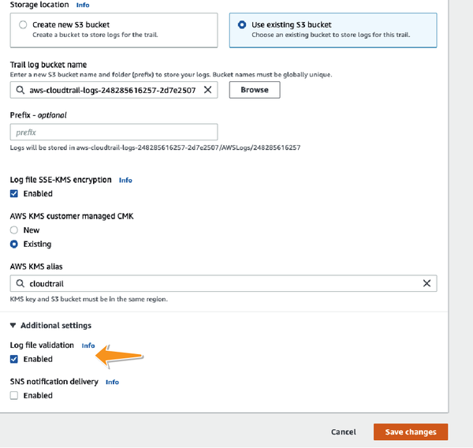
Through log validation, AWS will start hashing and digitally signing the trails on behalf of the account. So if regulators needed proof of log trail authenticity, AWS CloudTrail can provide administrators with the confidence they need.
I have already talked about purpose-built accounts in Chapter 8. Logging and monitoring is one place where purpose-built accounts can help in preventing attackers from gaining access to logfiles.
Instead of storing CloudTrail or VPC flow logs within the same account, a purpose-built logging account works as such:
A new and independent AWS account is created, either under the same AWS Organization or at times as a separate account altogether.
New AWS S3 buckets are created for this independent account for each of the domain or bounded contexts that exist in the current AWS account that runs your microservices.
The bucket policy (AWS resource policy for S3 buckets) is then used to grant CloudTrail access to put objects into this bucket. No entity from the current account is allowed to delete or read any of the objects from this bucket.
Independent roles are created within this account for analysts who wish to read these logs. These roles are also not allowed to put or delete any files.
Figure 9-13 shows a typical purpose-built account that is used for storing cloudtrail and VPC flow logs, which can be accesed securely by auditors or analysts.
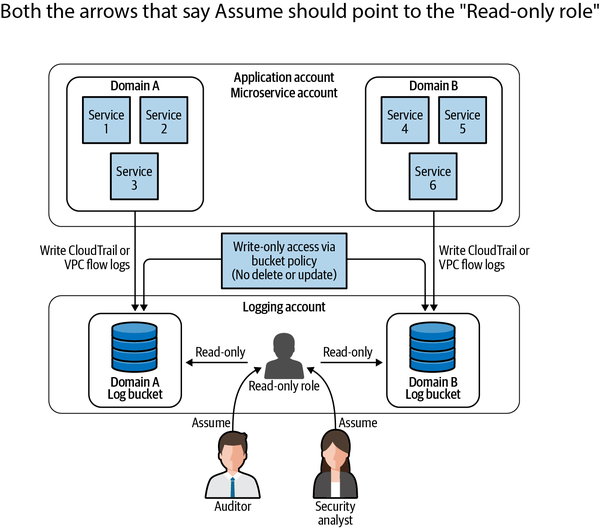
Using purpose-built accounts allows your logging infrastructure to stay independent of the rest of your application. The logfiles are kept safe from malicious users even if the original account is compromised since principals from the original account can only write new files to the destination bucket.
It is also possible to create new roles within the security account if the security team decides to outsource the analysis of logs to a third-party consultant. They will merely have to create roles within the security account for providing granular access to the logfiles.
In case of compliance audits, auditors can also be granted granular read-only access to these AWS S3 buckets through roles that are restricted to reading logfiles. This way, the permissions, security, and access control logic surrounding the logs can be kept separate and isolated from the rest of the application.
Incident response is probably one of the most important aspects of a security professional’s job. However, in my opinion, it is also one of the most overlooked aspects. Microservices and DDD afford the security team a great opportunity for setting up monitoring and incident response strategies at the forefront of their design. It is important for architects to grab these opportunities and put incident prevention and incident response strategies in place. In this chapter, I discussed a few well-known frameworks that formalize the process of incident prevention and incident response. The primary framework that I used as my guiding star is the incident response framework proposed in the NIST Computer Security Incident Handling Guide. I talked about the various services that make it easy for you to implement the steps as highlighted in the NIST’s incident response framework. And finally, I talked about how you can set up controls to protect the incident response infrastructure from attacks.